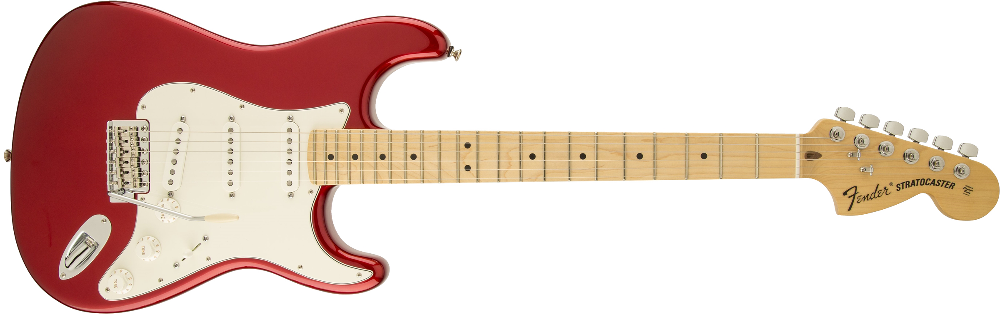
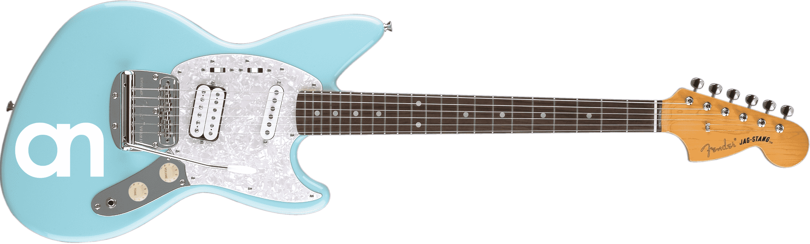
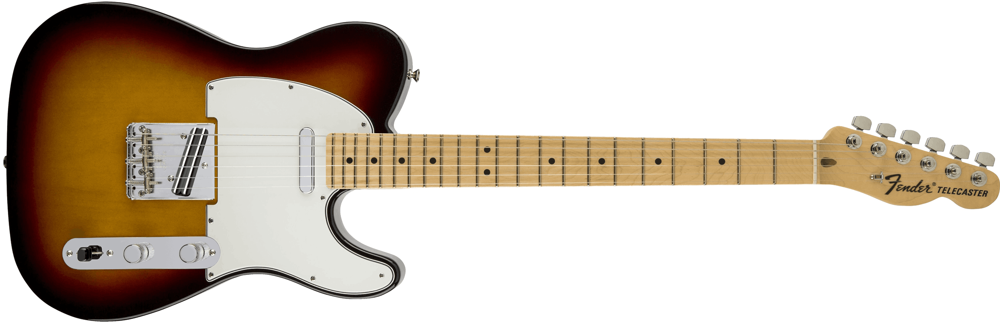
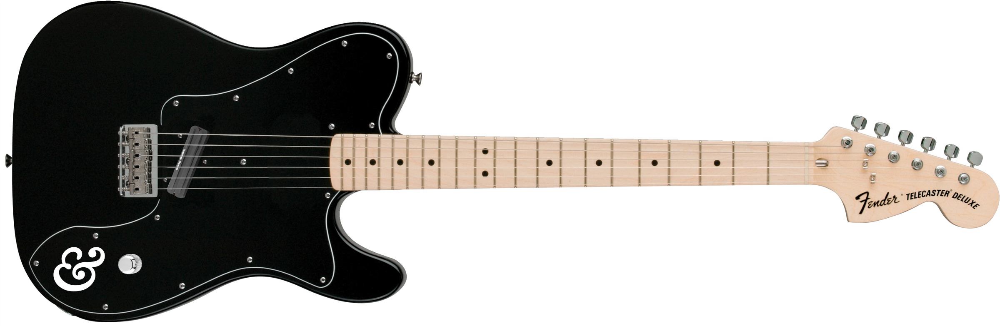
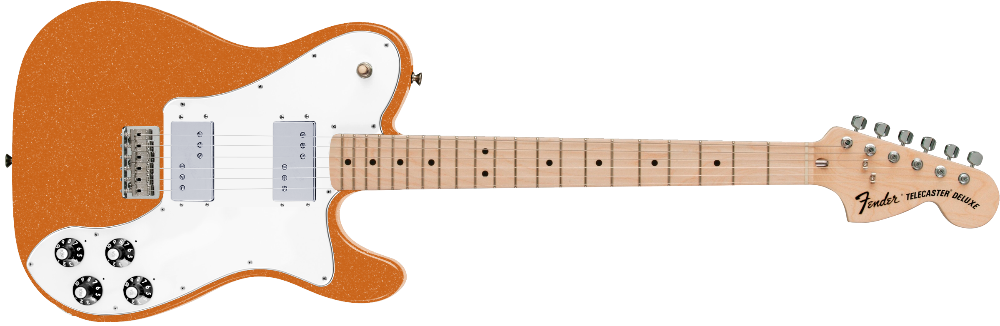
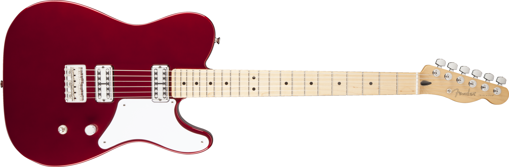

I recently designed a guitar from the ground up, based entirely on my own contradictory tastes. It’s taken me years to determine what I truly prefer, but its design is informed by my own playing, and a distillation of form. I’ve dubbed it the Cabronita Deluxe
Like any guitarist, my preference for instruments was informed largely based on aesthetic tastes.
Growing up, I was first drawn to the Fender Stratocaster. There was something so organic and beautiful about its design. There was something unique about how the primary colors of the body played with the exposed maple grain of the neck. The headstock, which I believe achieved absolute perfection in the late 60’s, was a thing of beauty. It had a style that was somehow future-leaning, and retro at the same time.
It’s always been hard to define why I like something aesthetically, especially when my tastes are seemingly contradictory across different objects and mediums. For apparel, as an example, I love the sleek look of a 50’s skinny neck tie matched by a hat. At the same time, I absolutely love the wide cuffs and collars of 70s shirts and jackets. If bell bottoms came back, I’d be set.
Aesthetically and otherwise, the best computer will always be Apple’s MacBook Pro. Apple’s latest products are absolutely minimalist in their approach, and represent a perfect distillation of the balance between form and function. I think Apple achieved this with the MacBook Pro. If you designed a computer and kept removing every superfluous bit of organic interface, you’d end up with the MacBook.
Similarly, Tesla’s cars are becoming the MacBook Pro of cars. I’d love to own one someday, though when I close my eyes and picture the perfect car, I can’t help but picture Ford’s 1965 Mustang.
I’ve written at length about how “It’s What You Leave Out”. Yet my favorite instruments seem so contradictory to that notion.
Tastes can be such a contradiction.
My favorite objects are so wildly different in their approach to form. The Stratocaster and MacBook could not be further apart, aesthetically. The guitar has curves and shapes that exist only to please the eye. The headstock and pickguard are superfluous. If you removed anything from the MacBook, the object would cease to function. So much can still be removed from the Stratocaster.
My first guitars were Strat copies that I borrowed from my older brother. One of these was made by Cort, and had a nice sealed maple neck with very low action. It defined how fretboards should feel.
My first real guitar was a Fender Jag-Stang. Most notably, it was designed by Kurt Cobain. It’s perhaps the worst-sounding guitar I have ever had, but its neck was a smaller scale that helped me learn how to play leads without needing to stretch my novice fingers too far. This was the first guitar I owned that had humbuckers. Though, oddly, the humbucker was slanted so none of the pole-pieces lined up, making the sound muddy, albeit noiseless. All of the stratocaster copies I’d played had noisy single coils pickups that were hard to predict. This frustrated me as a novice electric guitar player. I had a hunch that humbuckers could be very effective, should the actually be lined up properly.
I moved on to a Fender Highway One Telecaster. Over the years of gigging on the Jag-stang, I fell in love with the simplicity of Telecasters. The jag-stang had frustrating placement of its pickup selectors. Often, in the throws of a live show, I’d accidentally hit the controls along the top-side of the pickguard, changing the tone of the guitar in ways that were hard to predict. Telecasters, on the other hand, moved all the controls to below the strings.
Having only played second-hand guitars, I was ready to buy a brand new one. This was 2007, and Fender had just released its Highway One series. These guitars featured a thin, matte finish that totally breathes and has worn in a beautiful way where my arm rests. I was never a huge fan of the sunburst finish, but the wood that pops through is such a delight after 10 years of ownership.
The telecaster was the first guitar that I modified extensively. I swapped the standard bridge single coil pickup for a Seymour Duncan Hot Rails. It was an angled humbucker, but didn’t actually have individual poles. Instead, it has a single rail of magnets. I also flipped the control panel so the volume would be closer to my pinky, de-emphasizing the pickup selector. At the time, I opted for a push / pull volume knob that would allow me to split the humbucking coil into a more traditional tele twang.
Since then, my tastes have outgrown the Seymour Duncan on this guitar. I’ve since swapped the Duncan for a Guitar Fetish Lil’ Puncher. Combined with an upgrade to a 1meg volume pot, this insanely reasonably-priced pickup sounds amazing in the bridge position.
My next guitar was a ’72 Telecaster Deluxe re-issue. These guitars are manufactured in Mexico and are relatively easy to come by on Craigslist, etc. Mine was purchased in a suburb of Minneapolis for just shy of $500. These guitars typically have a Gibson-style control panel with a tone and volume knob for each wide range pickup. Instead of the standard configuration, I opted to mount a single Hot Rails pickup in the bridge and wire it directly to the volume knob. I took 4 knobs and 2 pickups, and simplified them into a single knob and single pickup. This required a custom pickguard that didn’t have all the areas pre-drilled. This guitar remains a canvas for adding or removing pickups as I please. It can take just about any configuration of electronics and circuitry. For some time it had Tronical’s automatic tuners on the top, but I found them to be a bit fussy for live-use.
Look at that beautiful ’72 Stratocaster’s headstock in its full 70’s glory.
The black Telecaster Deluxe was ideal until I fell absolutely in love with another gorgeous orange flake ’72 Telecaster Deluxe. I bought this via the internet without playing it. It was a total gamble, but the price was unbelievable and was matched only by this beautiful finish. Turns out, it is simply the best-feeling, best-sounding guitar I have ever played. Its pickups were re-wound by hand by a wizard on Chicago’s west side. They’re hot and sparkly, and gave my playing an entire new lens of expression. There’s nuance. There’s thunder. It’s perfect.
Each volume pot was upgraded to 1meg, so it gives everything a shimmer on the top end while maintaining a nice, tight low-end.
Though I’ve never owned one, I’ve long had my eyes on the Cabronita series of Telecasters. They represent a distillation of the Telecaster series that I’d not seen prior to their introduction. It drops them down to 2 pickups, with a single volume knob for each and a single selector to toggle between them. It minimizes the amount of pickguard and instead mounts pickups directly into the body.
Since I’d fallen in love with the pickups in the orange Telecaster Deluxe, I got in touch with the secret wizard who hand-wound the other pair. I sent him a new pair for rewinding.
The thing about widerange humbuckers is they’re incredibly difficult to mount from behind, and, to my knowledge, no one as done it. It took me weeks just to find someone to do it for me, but I finally found a body company called Guitar Mill that would agree to custom-fabricate a body that would allow them to be loaded in from behind. This required some hand-routing that I’m ever-grateful for. It’s such a more refined look when they’re mounted from behind. A lot of effort to save 8 screw holes, for sure, but I think the effort is worth it. If you’re going to go custom, go custom.
Speaking of custom, the body color is a tint called “Dynasty Green.” It was a rare color that Ford Motors applied to, you guessed it, ’65 Mustang coupes. It has a beautiful metallic quality that reflects in an interesting way, and shifts between blue and green depending on the light. When finishing this body, I experimented with different primers and landed on an automotive gray metal primer that made the dynasty green pop a bit more. Absolutely beautiful. The Usual Things’ guitarist Dan Braak ended up painting and finishing.
We chose to spray in nitrocellulose lacquer that, like the thin skin Highway One Telecaster, will age very well. It’s not a very hard finish, and will eventually wear through to the beautiful wood. I really look forward to seeing the wood peeking through the dynasty green after some years of use.
For the neck, I modeled my orange ’72 Reissue’s exactly, but had to order a blank one for the model I was now dubbing the “Cabronita Deluxe.” It’s got a custom water slide decal ordered through Rothko & Frost that was designed to keep within the aesthetic boundaries of the ’72 Reissue. I ordered it fully custom from Warmoth. It eschews the 3 bolt neck for a four bolt, and loses the bullet truss rod nut inherited by Telecaster Deluxes. The four bolts provide a bit better tuning stability.
It features modern Gotoh tuning machines that are styled in a vintage fashion. Each tuning peg is staggered in height to keep from needing string trees. I love the ’72 headstock so much, I wanted a way to keep it as unadorned as possible.
It features a modern hard-tail bridge with its super smooth saddles for a ton of comfort on your right hand as you palm mute.
Because I installed Fender Wide Range Humbuckers instead of more standard Fidelitron pickups, I needed to order a custom pickguard that would fit around the wideranges. I purchased this from Terrapin Guitars after designing the new shape in Illustrator.
Its single volume knob is rated 1meg, which gives each pickup the same sound as the orange Telecaster deluxe.
Even details like the jack mount were considered. The electrosocket jack mount solves the input jack coming loose, which is a problem most standard Telecasters often have.

It’s taken me years to determine what I truly prefer out of a guitar.
My strengths as a guitarist were developed to suit my own songwriting. Because I’m singing and writing the songs, I’ve largely been a rhythm guitarist. I’ll take a solo or a lead if it suits the vocal melody, but being the lead singer already satisfies those desires to create melodic hooks. If I feel a hole in the song, I’m more likely to fill it by singing something.
In other words, my playing style distills a balance between rhythm and melody. This guitar, in both utility and aesthetics, is optimized for the most simple licks and pickup switching.
It’s perhaps far from the MacBook Pro of guitars, but it balances a rich history of instruments with a distillation of form.
And it’s all mine.